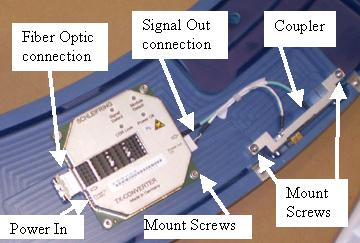
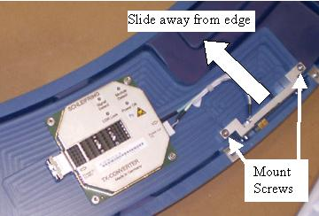

Operating Documentation
Direction 5307452-8EN, Rev# 4
Discovery CT750 HD Service Methods - Adv
Operating Documentation |
| Required Persons | Preliminary Reqs | Procedure | Finalization |
|---|---|---|---|
| 1 | Timing Not Applicable | 60 mins | 10 mins |
This procedure defines the steps necessary to replace the slip ring transmitter assembly.
| Last Revised: | June 13, 2008 |
| Item | Qty | Effectivity | Part# | Manufacturer | |
|---|---|---|---|---|---|
| FE Toolkit | 1 | - | - | - | |
| 2.5 mm hex wrench | 1 | - | - | - | |
| Lockout/Tagout Kit | 1 | - | - | - | |
| Cover Dollies | 1 pr | - | - | - | |
| Item | Qty | Effectivity | Part# | Manufacturer |
|---|---|---|---|---|
| Tie-wraps | AR | - | - | - |
| Hand Towels, for clean-up | AR | - | - | - |
| Item | Qty | Effectivity | Part# | Manufacturer | |
|---|---|---|---|---|---|
| Slip Ring Transmitter and Coupler | 1 | - | - | - | |
| POTENTIAL FOR SHOCK. | |
| VOLTAGE MAY BE PRESENT. POTENTIAL FOR INJURY IF COVERS REMOVED AND POWER IS LEFT ON. | |
| Always remove the right side cover first, and turn OFF power at the service switches. |
| Follow ALL required safety and PPE procedures customary for your organization, when working on this product. | |
| Condition | Reference | Eff |
|---|---|---|
Only trained service personnel should service the GE CT Scanner. | - | - |
| POTENTIAL FOR SHOCK. | |
| VOLTAGE MAY BE PRESENT. POTENTIAL FOR INJURY IF COVERS REMOVED AND POWER IS LEFT ON. | |
| Always remove the right side cover first, and turn OFF power at the service switches. |
Remove gantry left side cover.
Refer to Replacement → Gantry → Enclosure → (Cover Removal Procedures).
| Always turn OFF the HVDC before the 120 VAC. Turning OFF 120 VAC power before HVDC power can result in equipment damage. | |
Turn OFF the three (3) main power switches (HVDC, 120VAC, and Axial Drive) on the Service Switch Panel.
Shut down the console and perform the Lockout Tagout steps to lock out power to the gantry.
Remove the left side cover and top covers, then scan window and gantry rear cover.
Rotate the gantry by hand to gain access to the slip ring transmitter module. The transmitter is on the back side of the slip ring behind the detector assembly.
There is a thin gray cable routed to the transmitter, which makes locating it easier.
| Be careful to not contaminate the slip ring or signal tracks. | |
Disconnect the power input, signal output and fiber optic cables. Reference Illustration 1 showing ring assembly off gantry for identification of connections and mounting screws.
Illustration 1: Slip Ring Transmitter

Using a 2.5 mm allen wrench, remove the four screws holding the transmitter to the slip ring and remove the transmitter.
Remove the 2 screws holding the Coupler (see Illustration 1) and slide the coupler away from the connections.
Illustration 2: Slipring Coupler removal

Install the new transmitter using the 4 mount screws. Turn the screws till they are snug, then continue 1/4 turn more.
| NOTE: | A torque wrench can not be used in this location. 1/4 turn past snug will ensure sufficient torque to hold the transmitter in place. |
Install the new coupler by sliding it along the back surface of the slip ring onto the connections and mount using the 2 mount screws using the same process as the previous step for the transmitter.
Install the power, signal and fiber optic connections to the transmitter. Reference Illustration 1 for connection locations.
Remove the A1 Lockout/Tagout. Power up the console.
Install the gantry rear, top and left side covers. Install scan window.
Refer to Replacement → Gantry → Enclosure → (Cover Removal Procedures).
Enable 120 VAC HVDC and Axial Drive service switches from the service switch panel. Press the table drives enable button on the lower right corner of the service switch panel.
Install the gantry right side cover.
Perform a [System Scanning Test] from the [Functional Checks] menu of the service manual to ensure proper data transmission.
Check the RTS Dip stats for the scan just run and make sure there are no errors shown.